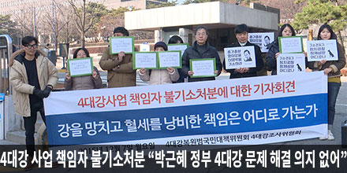
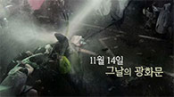

4대강 사업 책임자 불기소 처분"박근혜 정부 4대강 문제 해결 의지 없어"
봇물처럼 터져나온 민심 "대통령은 들어라"
[목격자들] 11월 14일, 그날의 광화문
[타파스]여성독립운동가 2편 사려진 독깁운동, 박자혜
민주노총 때리며 노동자 살리겠다?
국회 산자위원장, 공기업에 채불법 판매
박정희도 금지했는데... 계속되는'중간착취
강영원-GS-MB 실세 특별한 인연

'교수 동원, 기업 앵벌이'... 보훈처의 예산 꼼수
|
|
|||
| 12-07 17:06 편집 | |||
|
 4대강 사업 책임자 불기소 처분"박근혜 정부 4대강 문제 해결 의지 없어" |
※ 상단 광고는 뉴스타하와 구관한 네이버 자체 광고 입니다. | ||
|
봇물처럼 터져나온 민심 "대통령은 들어라" |
 [목격자들] 11월 14일, 그날의 광화문 |
||
|
[타파스]여성독립운동가 2편 사려진 독깁운동, 박자혜 |
민주노총 때리며 노동자 살리겠다? |
||
| 추천방송 | 민중총궐기 | 자원외교 | 나라사랑교육 |
|
국회 산자위원장, 공기업에 채불법 판매 |
박정희도 금지했는데... 계속되는'중간착취 |
강영원-GS-MB 실세 특별한 인연 |
'교수 동원, 기업 앵벌이'... 보훈처의 예산 꼼수 |
|
|
|||